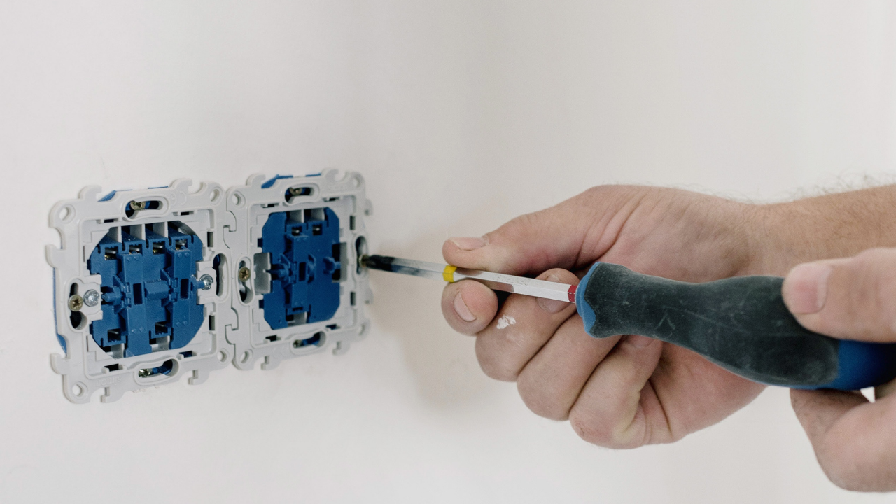

Bornova’da Güvenilir Elektrik Tamiri
Bornova’nın her bölgesine hızlı ve profesyonel elektrik hizmetleri sunuyoruz. Ev, ofis veya endüstriyel alanlarda uzman kadromuzla hizmetinizdeyiz.
+90 532 496 2448Hakkımızda
KRS Elektrik, Bornova başta olmak üzere tüm İzmir bölgesine güvenilir ve profesyonel elektrik hizmetleri sunan bir firmadır. Yılların getirdiği tecrübe ile evlerden büyük endüstriyel tesislere kadar geniş bir müşteri kitlesine hitap ediyoruz. Amacımız, elektrik alanında karşılaşılan tüm sorunlara hızlı, etkili ve uygun maliyetli çözümler sunarak müşterilerimizin memnuniyetini sağlamaktır.
Ev Elektrik Hizmetleri
KRS Elektrik olarak, evlerde sıklıkla karşılaşılan elektrik arızalarına yönelik hızlı ve etkili çözümler sunuyoruz. Sigorta arızaları, priz ve anahtar değişimi, avize montajı ve aydınlatma sistemlerinin kurulumu gibi hizmetlerle evlerinizi daha güvenli hale getiriyoruz. Ayrıca, enerji tasarrufu sağlayan aydınlatma sistemlerinin montajı konusunda da uzmanız.
Ofis ve Ticari Alan Hizmetleri
Ticari alanlar ve ofislerde elektrik sistemlerinin düzenli çalışması son derece önemlidir. Ofis içi elektrik tesisatı bakımı, veri kablolama, aydınlatma sistemlerinin kurulumu ve bakım hizmetleri sunuyoruz. Elektrik arızalarını hızlıca çözerek, iş süreçlerinizin kesintisiz devam etmesini sağlıyoruz.
Endüstriyel Elektrik Hizmetleri
Fabrika ve depo gibi endüstriyel alanlarda, elektrik sistemleri daha karmaşık olabilir ve düzenli bakım gerektirir. KRS Elektrik olarak, elektrik motorları bakımı, jeneratör bağlantıları ve enerji dağıtım sistemlerinin kurulumu gibi hizmetlerle endüstriyel alanlardaki ihtiyaçlarınıza profesyonel çözümler sunuyoruz.
Elektrikli Araç Şarj İstasyonu Kurulumu
Günümüzde elektrikli araçlar hızla yaygınlaşıyor ve bu araçların şarj istasyonları büyük önem taşıyor. KRS Elektrik olarak, hem evlere hem de ticari alanlara elektrikli araç şarj istasyonu kurulumu hizmeti sunuyoruz. Tüm kurulumlarımız, uluslararası standartlara uygun ve güvenlidir. Elektrikli araç sahiplerinin ihtiyaçlarına en iyi şekilde cevap vermek için bu alandaki uzmanlığımızı sürekli geliştiriyoruz.
Çanak Anten Kurulumu
Televizyon yayınlarınızda en yüksek kaliteyi sağlamak için çanak anten kurulumu hizmeti de sunmaktayız. Profesyonel ekibimiz, anten montajı ve ayarı yaparak kesintisiz yayın izlemenizi sağlar. Çanak anten sistemlerindeki arızaları da hızlıca gidererek, en iyi hizmeti almanızı garanti ediyoruz.
Neden KRS Elektrik?
KRS Elektrik, müşteri memnuniyetini her zaman öncelikli hedefi olarak belirlemiştir. Bornova ve İzmir’in dört bir yanında sağladığımız elektrik hizmetlerinde, kalite ve güvenilirlik temel prensiplerimizdir. Ekibimiz, sektörün en iyi eğitimlerine sahip elektrikçilerden oluşmaktadır. Her bir çalışanımız, güvenli elektrik sistemleri ve enerji verimliliği konularında uzmandır.
Ayrıca, çevre dostu enerji çözümlerine büyük önem veriyoruz. Solar enerji sistemleri kurulumu, enerji tasarruflu LED aydınlatma çözümleri ve modern elektrik tesisatlarıyla hem bireysel hem de kurumsal müşterilerimize uzun vadeli çözümler sunuyoruz.
Elektrik arızalarından tesisat kurulumlarına, elektrikli araç şarj istasyonu projelerinden çanak anten kurulumlarına kadar her alanda uzman kadromuzla hizmetinizdeyiz. Bornova’da bir elektrikçi arıyorsanız, doğru adrestesiniz. KRS Elektrik olarak, enerji ihtiyaçlarınıza profesyonel, güvenilir ve hızlı çözümler sunmak için buradayız.
Bize Ulaşın
Bornova’da elektrikle ilgili tüm ihtiyaçlarınız için bize güvenebilirsiniz. Profesyonel ekibimiz, sizin için her zaman hazır. İhtiyacınız olan her türlü elektrik hizmeti için bizimle iletişime geçin ve kaliteli hizmetin farkını yaşayın.
Hizmet Verdiğimiz Yerler
Hizmetlerimiz

Ev Elektrik Tamiri
Priz değişimi, sigorta arızaları ve elektrik tesisatı bakımı gibi evinizdeki tüm elektrik sorunları için yanınızdayız.

Ofis Elektrik Hizmetleri
Ofis içi elektrik tesisatı bakımı, aydınlatma sistemleri kurulumu ve elektrik sorunlarının giderilmesi.

Endüstriyel Elektrik Bakımı
Fabrika ve depolar için düzenli bakım ve arıza tamir hizmetleri.
Aydınlatma Sistemleri
Enerji verimli iç ve dış mekan aydınlatma sistemlerinin kurulumu ve tamiri.
İletişim
Her türlü elektrik sorunlarınız için bize ulaşın. Profesyonel ekibimiz, hızlı bir şekilde çözüm sunar.
+90 532 496 2448